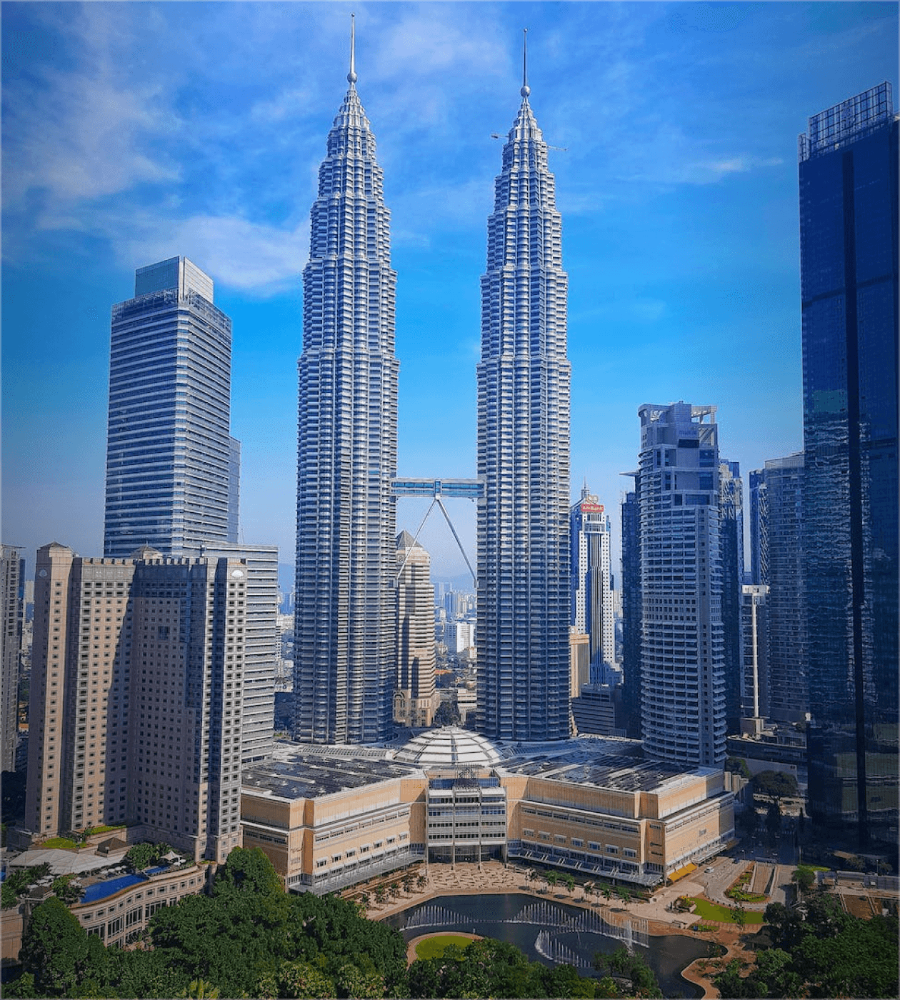
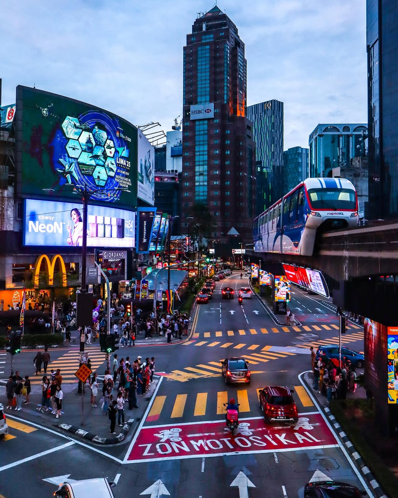

Must-Visit Places in Kuala Lumpur

Petronas Twin Towers (KLCC)
The Petronas Twin Towers stand as a symbol of Malaysia's ambition and progress. They reflect Kuala Lumpur's growth into a modern global city while representing national pride.

Bukit Bintang
Bukit Bintang is the heart of Kuala Lumpur's shopping and entertainment district. It's home to major shopping malls, restaurants, and nightlife venues.

Batu Caves
Batu Caves is a famous cultural and religious site located just outside the city center. The limestone caves and colorful steps make it one of the most visited attractions in Kuala Lumpur.